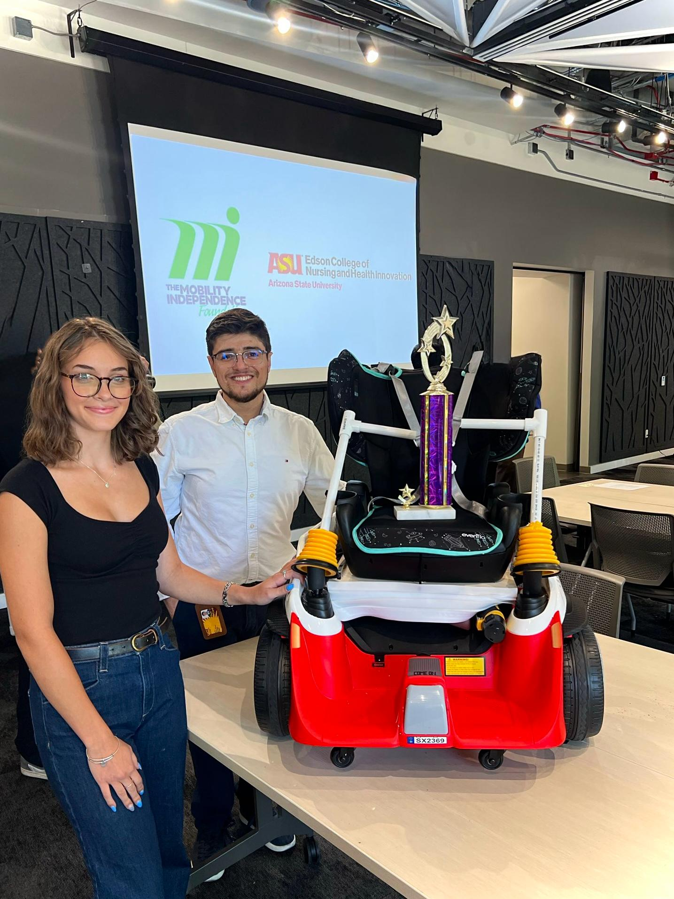

Healthcare Innovation • Open Source Design
Pediatric Electric Wheelchair
Developed an accessible pediatric training wheelchair designed to help children practice the skills needed for powered mobility. The project was built with replicability in mind, including an open-source guide for families.
★ Healthcare Innovation Design Challenge Winner

The Problem
Children may need to demonstrate wheelchair-driving proficiency to qualify for powered mobility equipment, while access to equipment for practicing those skills can be limited.
The Approach
Built a pediatric electric training wheelchair with a focus on creating a design that families could realistically replicate.
The Outcome
Created a step-by-step open-source manual with photographs and parent-friendly instructions. The project was named a winner of ASU's Healthcare Innovation Design Challenge.